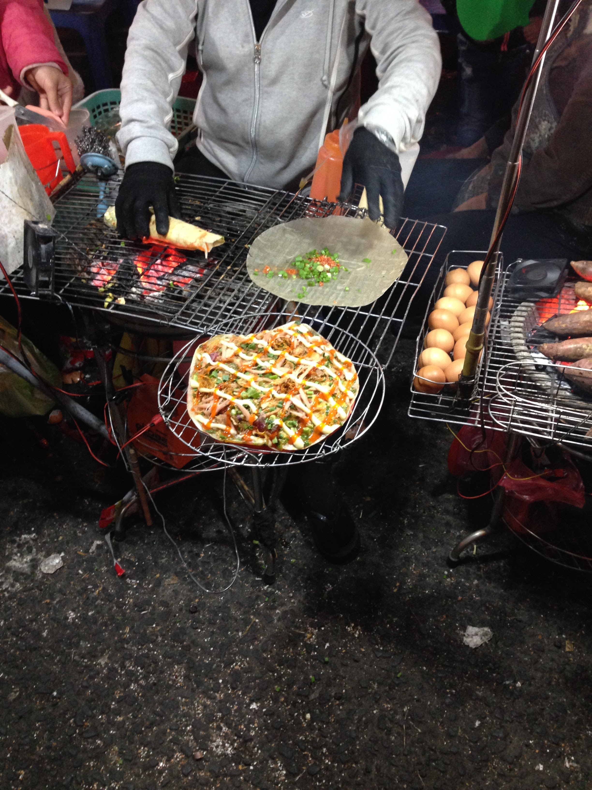
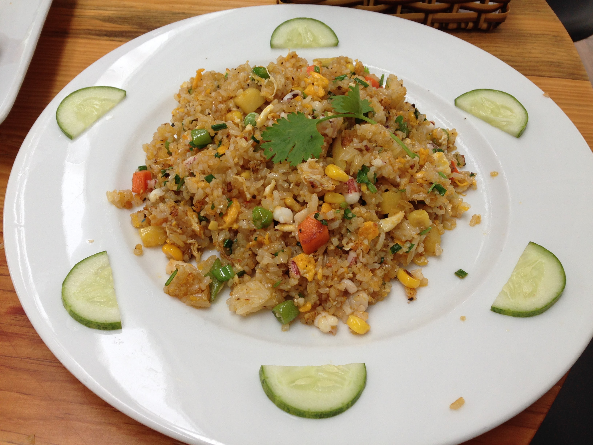
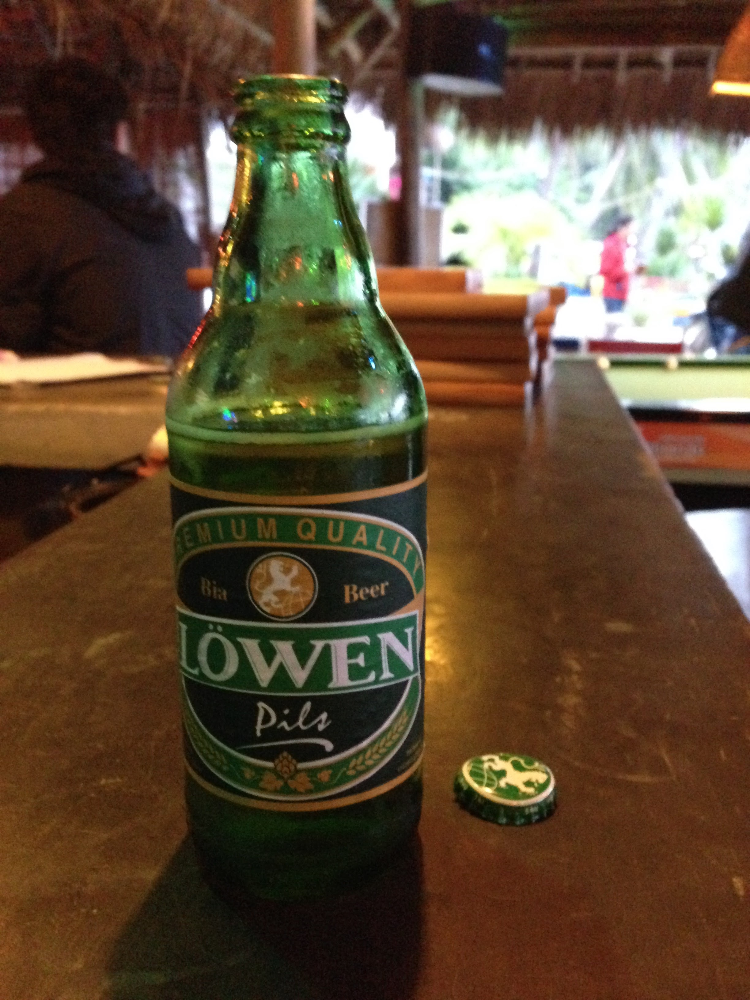
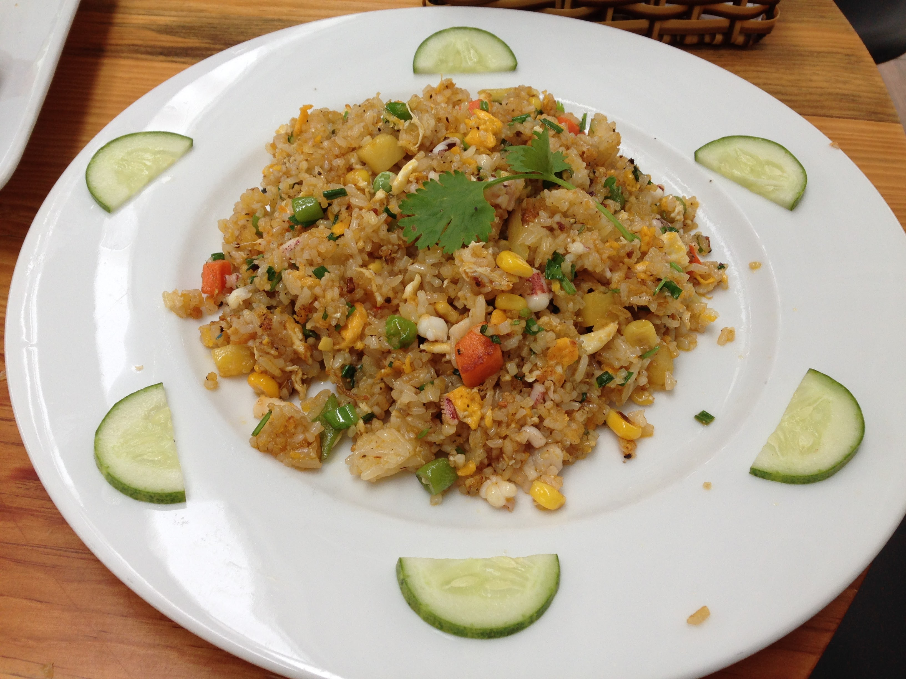
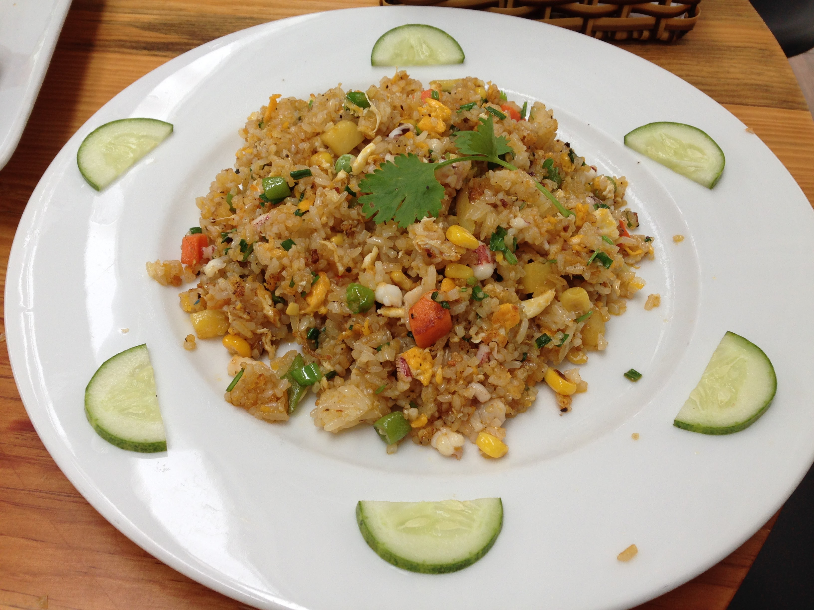

Learn More About Vietnam
Food Diary: Vietnamese Foods
1.Fresh Spring Roll
春捲中，通常價格是最貴的
2.Fried Spring Roll
有分全素的、葷的，下面兩張圖都是全素的
3.路邊攤的蛋餅

4.Fried Rice

5.White Rose
越南會安(Hoi An)必吃的白玫瑰，離開就買不到了
6.Local Beer

7.Mulberry Juice and Black Coffee
Back to Homework List

 
